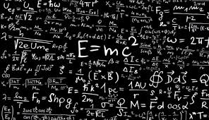
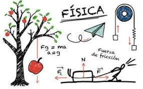

La física, con su intrincada red de leyes y principios que gobiernan nuestro universo, puede parecer a primera vista un campo de estudio serio y complejo. Sin embargo, la física también es una fuente inagotable de diversión y descubrimiento cuando se presenta a través de actividades lúdicas y creativas. Al integrar el juego en el aprendizaje de la física, no solo se fomenta la curiosidad y el entusiasmo, sino que también se facilita la comprensión de conceptos fundamentales.
En este contexto, exploraremos cómo la física se convierte en un emocionante terreno de juego. Desde experimentos prácticos hasta juegos de construcción y simulaciones interactivas, veremos cómo el juego puede desbloquear los secretos del movimiento, la energía, la luz y mucho más. Prepárate para embarcarte en un viaje donde la diversión se entrelaza con el conocimiento, y donde cada descubrimiento se convierte en un paso hacia una comprensión más profunda de las fuerzas que moldean nuestro mundo.
| Concepto | Descripción | Software Educativo |
|---|---|---|
| Física Lúdica | Aplicación de conceptos físicos en juegos y actividades interactivas para aprender de manera divertida. | PhET Interactive Simulations, Algodoo, Physics Playground |
| Software Educativo de Física | Programas diseñados específicamente para enseñar y aprender física mediante simulaciones y ejercicios interactivos. | Interactive Physics, Tracker Video Analysis, PASCO Capstone |
¡Bienvenido/a a este emocionante viaje de aprendizaje interactivo sobre física! Vamos a explorar los conceptos de MRU (Movimiento Rectilíneo Uniforme), caída libre y movimiento de proyectiles (como el de una bala) utilizando herramientas educativas que harán que estos temas cobren vida.
Además, exploraremos el movimiento de proyectiles, como el de una bala disparada. A través del software educativo, podremos ajustar parámetros como la velocidad inicial y el ángulo de lanzamiento para simular el vuelo del proyectil. Podremos estudiar cómo factores como la velocidad inicial y la gravedad afectan el alcance y la altura máxima alcanzada por el proyectil.
La caída libre es otro concepto emocionante que abordaremos. Podremos simular el movimiento de un objeto en caída libre bajo la influencia exclusiva de la gravedad, observando cómo cambia su velocidad y posición a medida que cae. Utilizando el software, podremos analizar gráficos de velocidad y posición durante la caída, y comprender la relación entre el tiempo y la aceleración debida a la gravedad.
Al utilizar estas herramientas educativas interactivas, no solo comprenderás mejor estos
conceptos
físicos fundamentales, sino que también disfrutarás del proceso de aprendizaje de una manera
estimulante
y divertida. La combinación de la física con la ludificación a través del software educativo
hará
que
estos temas sean accesibles y significativos para ti.
Prepárate para explorar el mundo de la física a través de la tecnología y la diversión! Juntos, descubriremos cómo la física influye en nuestro entorno y cómo podemos aplicar estos conocimientos en situaciones del mundo real. ¡Comencemos esta emocionante aventura educativa!
Haz clic en los botones a continuación para abrir los simuladores: